Constrained ordination
Tad & Jamie
Assigned Reading:
Chapter 6 from: Borcard, D., Gillet, F. and Legendre, P. 2011. Numerical Ecology with R. Springer. link
Key Points
Unconstrained vs. constrained ordination
Borcard et al. - Simple (unconstrained) ordination analyses a single data matrix. Canonical (constrained) ordination associates two or more data sets.
Ramette 2007 - “In constrained (canonical) ordination analyses, only the variation in the species table that can be explained by the environmental variables is displayed and analyzed, and not all the variation in the species table.” (This refers to asymmetrical methods only?)

Ordination chart
In Ch 6
RDA, CCA: asymmetrical matrices; combines multiple regression with PCA or CA (Extensions: partial RDA, variation partitioning, db-RDA)
LDA: combines quantitative variables to explain predefined grouping of objects
CCorA, CoIA, MFA: symmetrical matrices; computes eigenvectors to describe common structure of two data sets
RDA
Regress each (Hellinger-transformed) y(i) on X, find y_hat(i), and do PCA on Y_hat
Scaling 1 vs. scaling 2 (default in R)
For species and sites, interpretation same as in PCA
For explanatory variables and their relationships with response variables, subtle but important differences regarding angles, positions, centroids
Partial RDA
- e.g.,
envtopovs.envchem
(spechem.physio2 <- rda(spe.hel ~ pH + dur + pho + nit + amm + oxy + dbo + Condition(alt + pen + deb), data=env)) anova(spechem.physio2, step=1000) anova(spechem.physio2, step=1000, by="axis")
Forward selection of explanatory variables
Use VIFs to look for severe collinearity
forward.sel()inpackfor- Blanchet et al (2008) corrections built inordistep()invegan- allows use of factors
Variation partioning
- Steps to compute R2adj (Peres-Neto et al. 2006) -
varpart()invegan
db-RDA (Legendre and Anderson 1999)
Allows use of various dissimilarity measures, as in PCoA
Run PCoA on Y and then RDA on principal coordinates
capscale()invegan
CCA
Canonical counterpart of CA; otherwise similar to RDA
Rare species overemphasized
LDA
- Identifies linear combinations of environmental variables that best discriminate groups obtained by cluster analysis
Symmetric analysis
CCorA, CoIA (and RLQ), MFA
No “dependent” or “explanatory” matrix
Suitable for studying, e.g.,
- two groups of competing taxa
- Soil-vegetation relationships
Analysis Example
Constrained ordinations use an a prior hypothesis to produce the ordination plot (i.e. they relate a matrix of response variables to explanatory variables). They only display the variation in the data of the explanatory variables (versus unconstrained which display all the variation in the data). An unconstrained ordination is useful for viewing overall patterns in the data, but constrained ordinations allow you to test hypotheses and discover trends that were hidden in the unconstrained ordination (i.e. masked by high variability and high correlation structure). When you are comparing an unconstrained and constrained ordination on the same data, it is important that you use the same distance metric in order to jointly interpret them.
Outline
1) RDA
- interpret and plot
- forward selection of variables
- CCA
- interpret and plot
- db-RDA
- interpret and plot
- CAP
RDA and CCA are the two most common methods in ecology. db-RDA is very useful for using any dissimilarity/simmilarity measure. I’ll also mention CAP, which is not included in the reading, but seems like a robust constrained ordination.
Data: I am using my own community data for this example. The data is a species by site matrix (264 species by 27 sites) of coral reef benthic organisms. After looking at correlations between my explanatory variables, the environmental data I will use in this analysis is net primary productivity, coral cover, relief, exposure, mangrove connectivity, seagrass connectivity and depth.
I try to show different ways of plotting the data other than base plot (i.e. using ggplot), but I wasn’t able to find packages that were able to plot all of the different constrained ordinations.
RDA
RDA: combines regression and PCA, it is an extension of regression analysis to model multivariate response data. RDA computes axes that are linear combinations of the explanatory variables (in order of which explain the most variation of the species matrix). The axes are orthogonal to eachother (i.e. right angles). It is constrained because you are directly testing the influence of explanatory variables.
In terms of thinking of transforming your data for ordinations, this paper is helpful: http://adn.biol.umontreal.ca/~numericalecology/Reprints/Legendre_&_Gallagher.pdf
# Data import, transformation, distance matrix
# clear my environment
rm(list=ls())
library(stringr)
library(dplyr)##
## Attaching package: 'dplyr'## The following objects are masked from 'package:stats':
##
## filter, lag## The following objects are masked from 'package:base':
##
## intersect, setdiff, setequal, unionlibrary(tidyr)
library(vegan)## Loading required package: permute## Loading required package: lattice## This is vegan 2.4-4library(ggplot2)
# Purpose: initial ordination on montastraea data
load("data/montastraea_species_matrix_vegan_harbornesites.Rdata") # mont.spec.matrix
load("data/montast_harbmeta_fullsite_shannon.Rdata") # shannon.montast.env.site
ls()
head(shannon.montast.env.site)
# hellinger transform the species dataset: gives low weights to rare species
spe.hel <- decostand(mont.spec.matrix.27, "hellinger")
# Calculate distance matrix
bc<-vegdist(spe.hel, method="bray", binary=FALSE)
# look at an unconstrained ordination first, it is always a good idea to look at both unconstrained and constrained ordinations
# set the seed: to reproduce the same result in the fture
set.seed(100)
bci.mds<-metaMDS(spe.hel, distance = "bray", k = 2)
# extract x and y coordinates from MDS plot into new dataframe, so you can plot with ggplot
MDS_xy <- data.frame(bci.mds$points)
bci.mds$stress # 0.1241412
# colour by island
ggplot(MDS_xy, aes(MDS1, MDS2, col=shannon.montast.env.site$Island)) + geom_point() + theme_bw() + ggtitle('stress:0.12')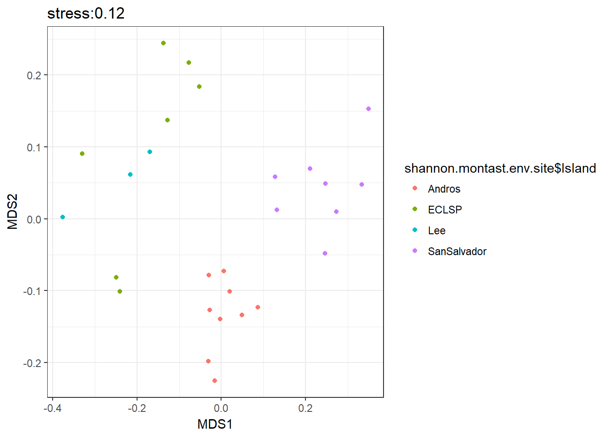
# RDA
simpleRDA <- rda(spe.hel ~ Net_primary_productivity + Relief + Exposure + Mangrove_connectivity + Denseseagrass_connectivity + Coral + Depth + Protected_status_text, data=shannon.montast.env.site )
summary(simpleRDA)
screeplot(simpleRDA) #bstick not available for constrained ordinations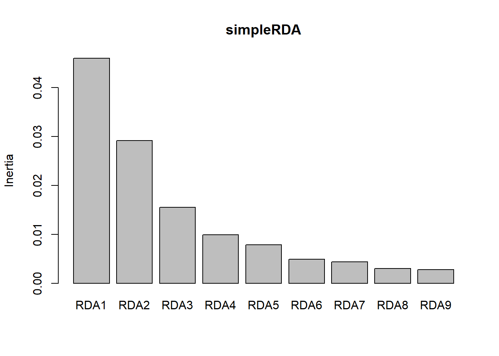
So this is a lot of output, how do we interpret this?
We can see that the first two axes explain most of the variation (RDA1- 0.24. RDA2- 0.15, cumulative- 0.39) so plotting by these two axes seems to represent the data well. The unconstrained eigenvalue (PC1) is 0.05, so comparatively small, which means it does not display any important residenual structure of the response data. Each RDA axis has an eigenvalue, which is the proportion of the variance explained by each axis. The species and site scores tells us where the sites and species fall along the axes.
- Partioning of variance: the overall variance is partitioned into constrained and unconstrained fractions. The constrained is the amount of variance the species by site matrix is explained by the explanatory variables (expressed as a proportion, is equivalent to R2 in a multiple regression). Yet this R2 is biased so you have to look at the adjusted R2 (below)
- Eigenvalues and their contribute to variance: RDA1 –> RDA9 for the canonical axes, and unconstrained axes. The cumulative contribute of the variance is the proportion of the total variance of the response data explained by the RDA. The results also give the eigenvalues.
- Eigenvalues: the canonical eigenvalues are decreasing in value (in the order they are presented). But sometimes the residual structure (residual eigenvalue PC1) can be larger than the last RDA eigenvalue, which means that the residual structure has more variance than some of the structures that can be explained by the explan variables. It is up to you on how to deal with this?
- Canonical eigenvalues: measure the amount of variance explained by the RDA model
- Residual eigenvalues: measure the amount of variance represented by the residual axes
- Accumulated constrained eigenvalues: cumulative amounts of variance expressed as proportions of the total explained variance
- Species scores: coordinates of the tips of vectors representing the response variables in bi or triplots
- Site scores (weighted sums of species scores): coordinates of the sites as expressed in the space of the response variables
- Site constraints (linear combinations of constraining variables): coordinates of the sites in space of the explanatory variables
- Biplot scores for constraining variables: coordinates of the tips of the vectors represnting explanatory variables
- Centroids for factor constraints: coordinates of centroids of levels of factor variables
What if we want the canonical coefficient (i.e. the equivalent of regression coefficients for each explanatory variable on each canonical axis)
# canonical coefficients
coef(simpleRDA)Retrive, interpret and plot results from the vegan RDA output
We can get the R2 for model fit for the constrained ordinations.
# unadjusted R^2 retreived from the rda result
R2 <- RsquareAdj(simpleRDA)$r.squared
R2 ## [1] 0.6447528# adjusted R^2
R2adj <- RsquareAdj(simpleRDA)$adj.r.squared
R2adj ## [1] 0.4566807As you can see, the adjustment has reduced the value of R2. The adjusted R2 measures the unbiased amount of explained variation. So this model explains 45.6% of the variation in the data. If you used the biased R2, any variable included in the explanatory responses would increase the R2, so the R2 needs to be adjusted for the number of explanatory variables (especially since we have eight included here).
Now lets plot the results of the RDA. There are two ways to plot the RDA, using “wa” and “lc”.
The first plots we will show will be using ‘wa’ plotting (weighted sums of species).
Note: the code below uses a package called ggord. You can find instructions for installing this package here.
# Triplot: three different entities in the plot: sites, response variables and explanatory variables (arrowheads are on the explanatory variables)
# Scaling 1
plot(simpleRDA, scaling=1, main="Triplot RDA matrix ~ env - scaling 1 - wa scores")
# arrows for species are missing, so lets add them without heads so they look different than the explanatory variables
spe.sc <- scores(simpleRDA, choices=1:2, scaling=1, display="sp")
arrows(0,0,spe.sc[,1], spe.sc[,2], length=0, lty=1, col='red')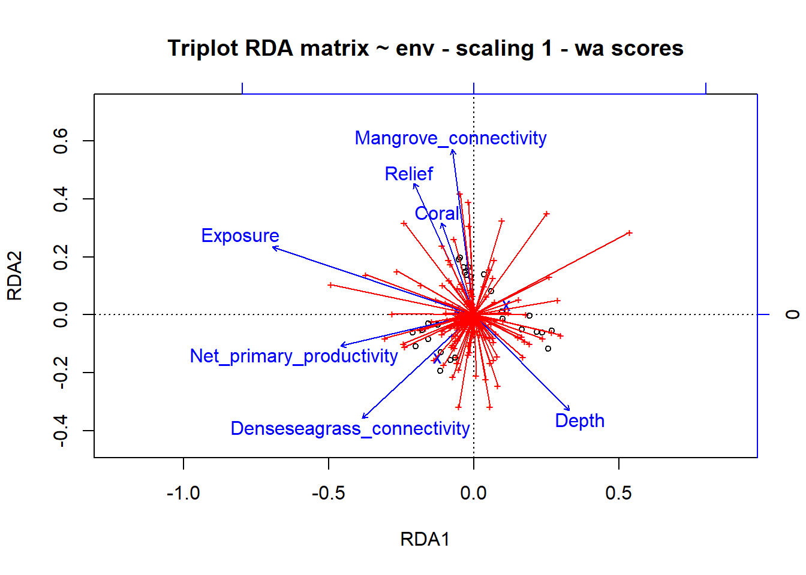
# Scaling 2
plot(simpleRDA, main="Triplot RDA matrix ~ env - scaling 2 - wa scores")
spe2.sc <- scores(simpleRDA, choices=1:2, display="sp") # scores() choices= indicates which axes are to be selected, make sure to specify the scaling if its different than 2
arrows(0,0,spe2.sc[,1], spe2.sc[,2], length=0, lty=1, col='red')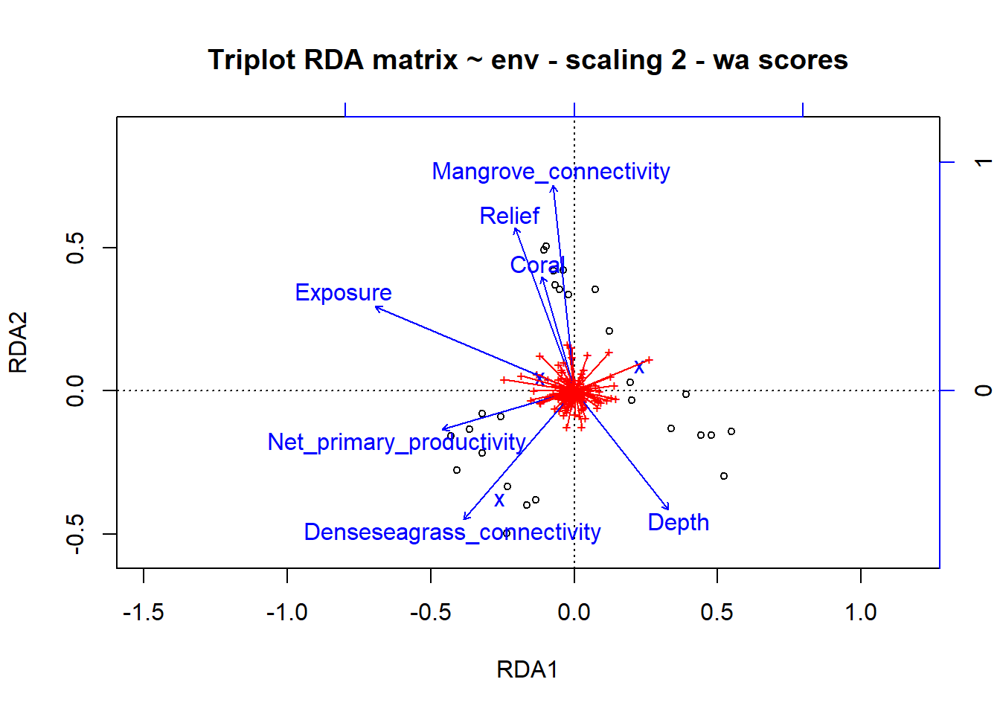
# plot the RDA using ggplot (ggord package)
library(ggord)
ggord(simpleRDA, shannon.montast.env.site$Island) + theme(panel.grid.major = element_blank(), panel.grid.minor = element_blank()) # looking at the raw code, this is plotting the 'wa scores', the blue dots are different species 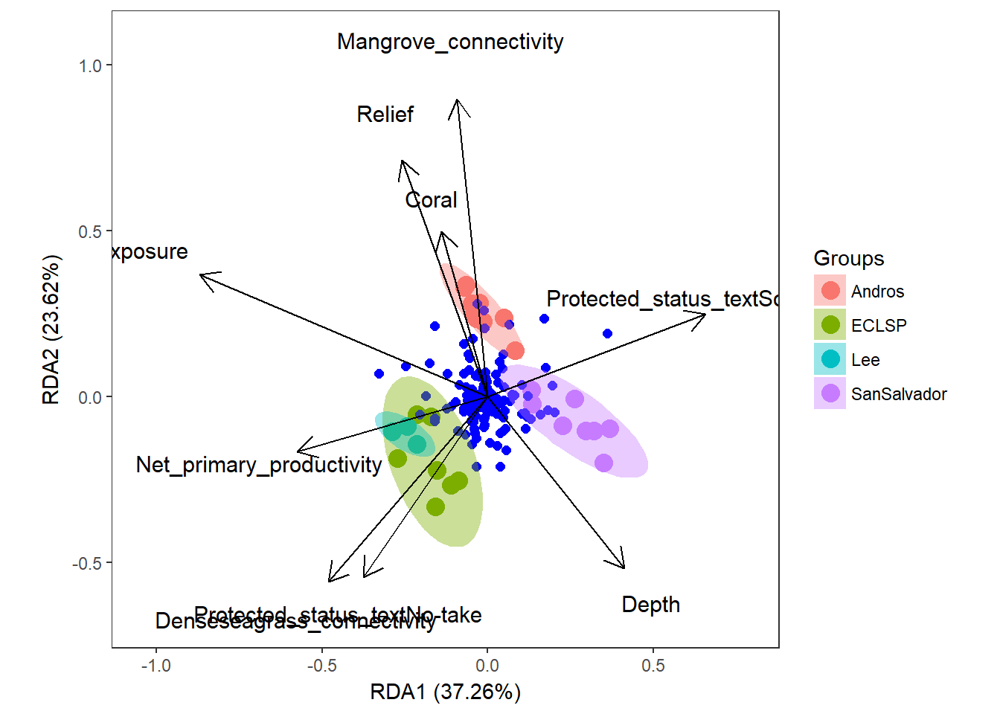 So these results are showing us that Mangrove connectivity, Relief, Coral, Dense seagrass connectivity, and Depth are contributing to RDA2 while Exposure and Net primary productivity are contributing to RDA1. It seems that sites with increasing depth have decreasing exposure (from scaling 2). The vectors indicate species that are driving different axes.
Wa or lc?
The two RDA plots above use the site scores that are weighted sums of species (wa), but you can choose the fitted site scores (lc). Choosing between these site scores is still controversial.
‘lc’: orthogonal linear combinations of the explanatory variable
‘wa’: more robust to noise in the environmental variables but are a step between constrained towards unconstrained.
How do we know whether to use lc or wa?
Most of the time, the default is “wa”. Because these are the most robust to noise in the data.
Remember Scaling 1 vs Scaling 2:
- Scaling 1- distance biplot (object focused): distance between objects are eudlidean distances (objects closer together have similar variable values), angles between vectors of response variables are meaningless. Angles between vectors of response variables and explanatory variables reflect linear correlation.
- Scaling 2- correlation biplot (response variable focused): distances between objects are not approximate Euclidean distances. Angles between all vectors reflect linear correlation.
Now lets plot the results of the RDA using ‘lc’
# site scores as linear combinations of the environmental variables
# Scaling 1
plot(simpleRDA, scaling=1, display=c("lc", "sp", "cn"), main="Triplot RDA matrix ~ env -scaling 1- lc scores")
arrows(0,0, spe.sc[,1], spe.sc[,2], length=0, lty=1, col='red')
# text(simpleRDA, display = "spec", cex=0.7, col="blue")
# scaling 2
plot(simpleRDA, display=c("sp", "lc", "cn"), main="Triplot RDA matrix ~ env -scaling2-lc scores", col=shannon.montast.env.site$Island)
arrows(0,0,spe2.sc[,1],spe2.sc[,2], length=0, lty=1,col='red')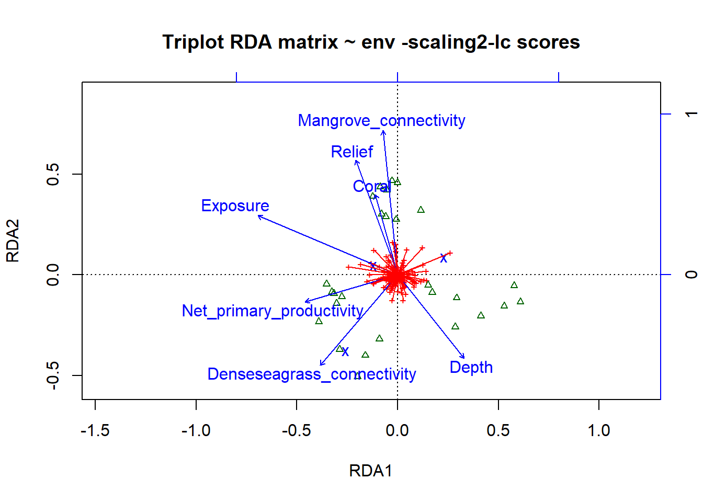
# To choose the elements that are plotted, use the argument display=c(), sp=species, wa= site scores in the species space (weighted averages), lc= fitted site scores (linear combinations of explanatory variables) and cn= constraints (the explanatory variables)The results look very similar. We will stick with ‘wa’ because they are the suggested scores.
Forward Selection of Variables
When you want to reduce the number of explanatory variables.
# variance inflation factors in the RDA
vif.cca(simpleRDA)## Net_primary_productivity Relief
## 2.695918 3.667992
## Exposure Mangrove_connectivity
## 4.295913 5.150047
## Denseseagrass_connectivity Coral
## 9.440542 1.965195
## Depth Protected_status_textNo-take
## 1.721723 7.498254
## Protected_status_textSome management
## 4.927174Anything above 10 should be examined or avoided. Seagrass connectivity is close, but not over 10.
# Forward selection of explanatory variables (form of model selection)
# RDA with all explanatory variables
spe.rda.all <- rda(spe.hel ~ Net_primary_productivity + Relief + Exposure + Mangrove_connectivity + Denseseagrass_connectivity + Coral + Depth + Protected_status_text, data=shannon.montast.env.site)
# Forward selection using ordistep
ordistep(rda(spe.hel ~Net_primary_productivity + Relief + Exposure + Mangrove_connectivity + Denseseagrass_connectivity + Coral + Depth + Protected_status_text, data=shannon.montast.env.site), direction="forward", pstep=1000, R2scop=TRUE) #R2scope only accepts models with lower adjusted R2##
## Start: spe.hel ~ Net_primary_productivity + Relief + Exposure + Mangrove_connectivity + Denseseagrass_connectivity + Coral + Depth + Protected_status_text## Call: rda(formula = spe.hel ~ Net_primary_productivity + Relief +
## Exposure + Mangrove_connectivity + Denseseagrass_connectivity +
## Coral + Depth + Protected_status_text, data =
## shannon.montast.env.site)
##
## Inertia Proportion Rank
## Total 0.19156 1.00000
## Constrained 0.12351 0.64475 9
## Unconstrained 0.06805 0.35525 17
## Inertia is variance
##
## Eigenvalues for constrained axes:
## RDA1 RDA2 RDA3 RDA4 RDA5 RDA6 RDA7 RDA8 RDA9
## 0.04602 0.02917 0.01549 0.00989 0.00789 0.00491 0.00436 0.00300 0.00279
##
## Eigenvalues for unconstrained axes:
## PC1 PC2 PC3 PC4 PC5 PC6 PC7 PC8
## 0.010759 0.008512 0.006477 0.005134 0.004891 0.004096 0.003939 0.003584
## (Showed only 8 of all 17 unconstrained eigenvalues)So it says the best model for this data includes all of the explanatory variables.
Permutation Tests of RDA Results
Permutation tests are common in ecology because alot of our data is non-normal. Permutation tests generates a reference distribution of a chosen test statistic by randomly permuting elements of the data a large number of times and recomputing the statistic each time. Then you compare the true value of the statistic to the reference distribution.
# Test of RDA result
anova.cca(simpleRDA, step=1000)## Permutation test for rda under reduced model
## Permutation: free
## Number of permutations: 999
##
## Model: rda(formula = spe.hel ~ Net_primary_productivity + Relief + Exposure + Mangrove_connectivity + Denseseagrass_connectivity + Coral + Depth + Protected_status_text, data = shannon.montast.env.site)
## Df Variance F Pr(>F)
## Model 9 0.123508 3.4282 0.001 ***
## Residual 17 0.068051
## ---
## Signif. codes: 0 '***' 0.001 '**' 0.01 '*' 0.05 '.' 0.1 ' ' 1# Test of all canonical axes
anova.cca(simpleRDA, by='axis', step=1000)## Permutation test for rda under reduced model
## Forward tests for axes
## Permutation: free
## Number of permutations: 999
##
## Model: rda(formula = spe.hel ~ Net_primary_productivity + Relief + Exposure + Mangrove_connectivity + Denseseagrass_connectivity + Coral + Depth + Protected_status_text, data = shannon.montast.env.site)
## Df Variance F Pr(>F)
## RDA1 1 0.046015 11.4953 0.001 ***
## RDA2 1 0.029168 7.2867 0.001 ***
## RDA3 1 0.015491 3.8700 0.001 ***
## RDA4 1 0.009886 2.4697 0.009 **
## RDA5 1 0.007886 1.9702 0.123
## RDA6 1 0.004906 1.2257 0.850
## RDA7 1 0.004363 1.0900 0.871
## RDA8 1 0.003003 0.7503 0.993
## RDA9 1 0.002787 0.6962 0.878
## Residual 17 0.068051
## ---
## Signif. codes: 0 '***' 0.001 '**' 0.01 '*' 0.05 '.' 0.1 ' ' 1RDA Result: The model refers to the constrained component and the residual is the uncontrained ordination. From this, we can see the model is significant.
All canonical axes: Note only the top 4 axes are significant. I think this is ok, because we are mainly interested in the top 2.
CCA: Canonical correspondence analysis
It is a weighted form of RDA applied to the same species matrix. It preserves the chi-squared distance among sites, and species are represented as points in triplots. In the CCA triplot species are ordered along canonical axes following their ecological optima, which allows relatively easy ecological interpretation. The drawbacks, are the chi-squared distance is not always accepted by ecologists and it was “one of the worst distances for community composition data”. It should only be used where rare species are sampled well and are seen as potential indicators of paricular characteristics of the ecosystem. Or else you could get rid of rare species prior to CCA. Additional, you can not compute an adjusted R2 (i.e. you have a biased measure of explained variation).
This probably is not the best bet for my data, but since it is so common, let’s run a quick example and talk about how to interpret it.
# CCA constrained by the same environmental data
simpleCCA <- cca(mont.spec.matrix.27 ~ Net_primary_productivity + Relief + Exposure + Mangrove_connectivity + Denseseagrass_connectivity + Coral + Depth + Protected_status_text, data=shannon.montast.env.site ) # Notice we are not using the hellinger transformation that downweights the importance of rare species
summary(simpleCCA)
# variation is now expressed as the mean squared contigency coefficient (biased and is not easily adjusted)
# species scores are represented as points
# site scores are averages of species scores
screeplot(simpleCCA) # the first two axes are not as clear 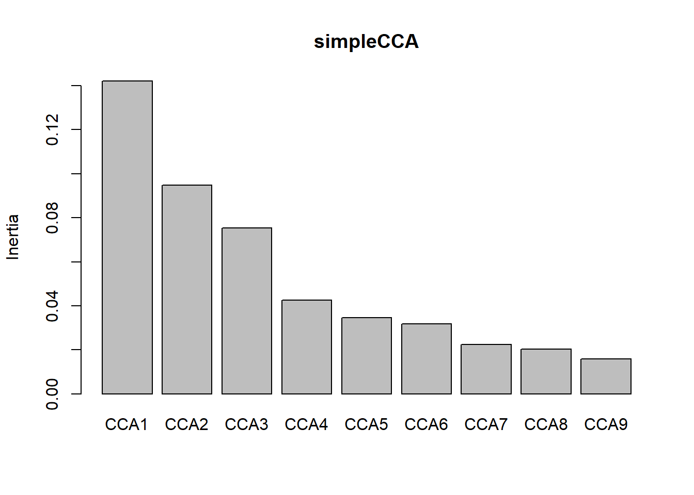
The model explains 59% of the variation with 41% left unconstrained. The top axes are not as clear with the first two CCA1- 0.1736, CCA2- 0.11564, not that much higher than CCA3 0.09216.
But let’s plot it just with the two axes.
# CCA Triplots
# Scaling 1: species scores scaled to relative eigenvalues, sites are weighted averages of the species
plot(simpleCCA, scaling=1, display=c('sp', 'lc', 'cn'), main='Triplot CCA matrix ~ env -scaling 1')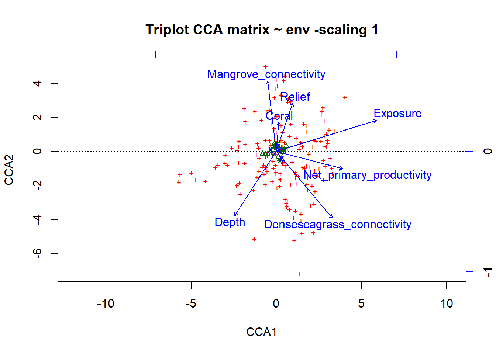
# Scaling 2 (default): site scores scaled to relative eigenvalues, species are weighted averages of the sites
plot(simpleCCA, display=c('sp', 'lc', 'cn'), main="Triplot CCA matrix ~ env -scaling 2")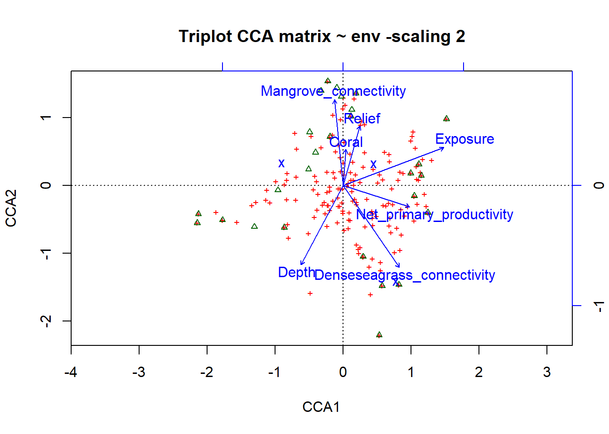
# plot the CCA using ggplot (ggord package)
ggord(simpleCCA, shannon.montast.env.site$Island) + theme(panel.grid.major = element_blank(), panel.grid.minor = element_blank()) # looking at the raw code, this is plotting the 'wa scores'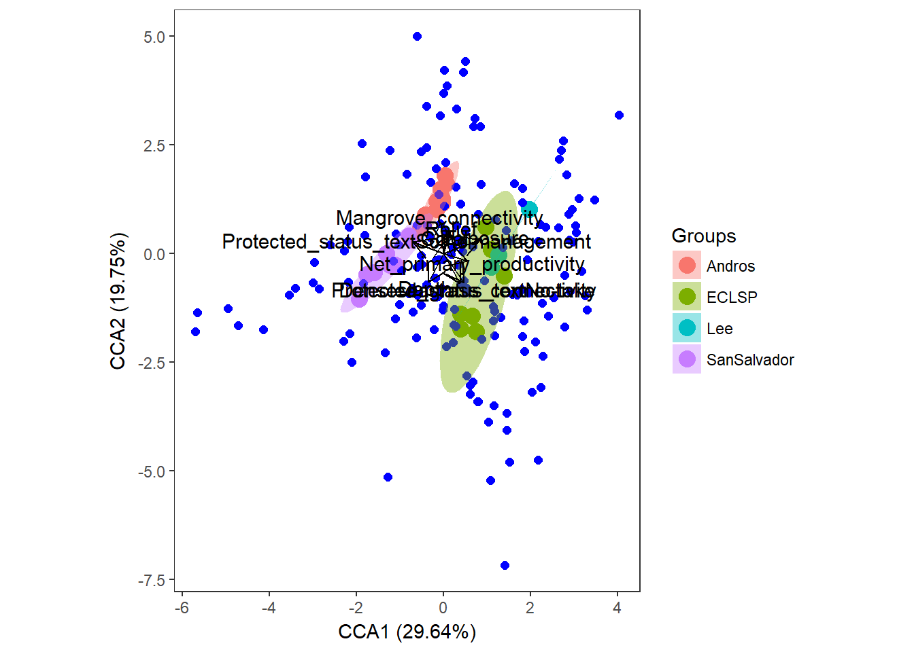 So this is telling us similar results to the RDA.
Distance Based RDA
db-RDA is an important constrained ordination because it allows you to use other dissimilarity matrices (e.g. bray) that are non-euclidean in RDA (i.e. you don’t have the double zero problem). It makes a dissimilarity matrix, creates a PCoA, then runs an RDA of the principal coordinates created in the PCoA constrained by the explanatory variables.
# db-RDA
dbRDA <- capscale(mont.spec.matrix.27 ~ Net_primary_productivity + Relief + Exposure + Mangrove_connectivity + Denseseagrass_connectivity + Coral + Depth + Protected_status_text, data=shannon.montast.env.site, distance = "bray")
dbRDA## Call: capscale(formula = mont.spec.matrix.27 ~
## Net_primary_productivity + Relief + Exposure +
## Mangrove_connectivity + Denseseagrass_connectivity + Coral + Depth
## + Protected_status_text, data = shannon.montast.env.site, distance
## = "bray")
##
## Inertia Proportion Eigenvals Rank
## Total 2.05445 1.00000 2.06789
## Constrained 1.40199 0.68241 1.40650 9
## Unconstrained 0.65247 0.31759 0.66139 17
## Imaginary -0.01344 2
## Inertia is squared Bray distance
##
## Eigenvalues for constrained axes:
## CAP1 CAP2 CAP3 CAP4 CAP5 CAP6 CAP7 CAP8 CAP9
## 0.5336 0.4557 0.1404 0.0965 0.0774 0.0387 0.0328 0.0184 0.0129
##
## Eigenvalues for unconstrained axes:
## MDS1 MDS2 MDS3 MDS4 MDS5 MDS6 MDS7 MDS8
## 0.13359 0.10560 0.08845 0.06212 0.04350 0.03800 0.03458 0.03135
## (Showed only 8 of all 17 unconstrained eigenvalues)plot(dbRDA)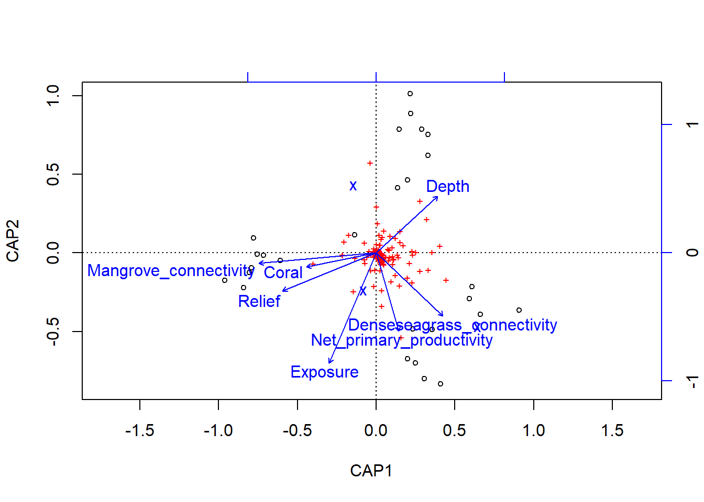
summary(dbRDA)##
## Call:
## capscale(formula = mont.spec.matrix.27 ~ Net_primary_productivity + Relief + Exposure + Mangrove_connectivity + Denseseagrass_connectivity + Coral + Depth + Protected_status_text, data = shannon.montast.env.site, distance = "bray")
##
## Partitioning of squared Bray distance:
## Inertia Proportion
## Total 2.0679 1.0000
## Constrained 1.4020 0.6780
## Unconstrained 0.6525 0.3155
##
## Eigenvalues, and their contribution to the squared Bray distance
##
## Importance of components:
## CAP1 CAP2 CAP3 CAP4 CAP5 CAP6
## Eigenvalue 0.5336 0.4557 0.14042 0.09653 0.07745 0.03868
## Proportion Explained 0.2580 0.2204 0.06791 0.04668 0.03745 0.01870
## Cumulative Proportion 0.2580 0.4784 0.54631 0.59299 0.63045 0.64915
## CAP7 CAP8 CAP9 MDS1 MDS2 MDS3
## Eigenvalue 0.03283 0.01837 0.01293 0.1336 0.10560 0.08845
## Proportion Explained 0.01588 0.00888 0.00625 0.0646 0.05107 0.04277
## Cumulative Proportion 0.66503 0.67391 0.68016 0.7448 0.79583 0.83860
## MDS4 MDS5 MDS6 MDS7 MDS8 MDS9
## Eigenvalue 0.06212 0.04350 0.03800 0.03458 0.03135 0.02384
## Proportion Explained 0.03004 0.02104 0.01838 0.01672 0.01516 0.01153
## Cumulative Proportion 0.86865 0.88968 0.90806 0.92478 0.93994 0.95147
## MDS10 MDS11 MDS12 MDS13 MDS14 MDS15
## Eigenvalue 0.02218 0.01773 0.01723 0.01356 0.01295 0.008175
## Proportion Explained 0.01072 0.00858 0.00833 0.00656 0.00626 0.003950
## Cumulative Proportion 0.96219 0.97077 0.97910 0.98566 0.99193 0.995880
## MDS16 MDS17
## Eigenvalue 0.00535 0.003169
## Proportion Explained 0.00259 0.001530
## Cumulative Proportion 0.99847 1.000000
##
## Accumulated constrained eigenvalues
## Importance of components:
## CAP1 CAP2 CAP3 CAP4 CAP5 CAP6
## Eigenvalue 0.5336 0.4557 0.14042 0.09653 0.07745 0.03868
## Proportion Explained 0.3794 0.3240 0.09984 0.06863 0.05506 0.02750
## Cumulative Proportion 0.3794 0.7034 0.80321 0.87184 0.92691 0.95441
## CAP7 CAP8 CAP9
## Eigenvalue 0.03283 0.01837 0.01293
## Proportion Explained 0.02334 0.01306 0.00919
## Cumulative Proportion 0.97775 0.99081 1.00000
##
## Scaling 2 for species and site scores
## * Species are scaled proportional to eigenvalues
## * Sites are unscaled: weighted dispersion equal on all dimensions
## * General scaling constant of scores: 2.703444
##
##
## Species scores
##
## CAP1 CAP2 CAP3 CAP4
## AGJ 0.0185904 1.151e-01 6.058e-02 -5.501e-02
## Acervicornis -0.0153068 6.642e-03 -3.544e-03 1.436e-04
## Acetabularia 0.0000000 0.000e+00 0.000e+00 0.000e+00
## Acfulva 0.2810320 -1.147e-01 7.373e-02 3.621e-02
## Aclathrodes 0.0051215 9.409e-03 9.260e-03 -5.720e-03
## Acomplanarta 0.0090113 -8.182e-03 -9.401e-03 1.736e-03
## Acompressa 0.0163490 -4.566e-02 5.867e-02 -3.959e-02
## Aconifera 0.0641576 -2.220e-02 -2.303e-02 -4.858e-03
## Acrassa 0.1420728 -2.545e-02 -5.561e-02 -8.395e-03
## Adispar 0.0053420 3.272e-03 -5.927e-03 6.662e-04
## Afistularis 0.2116285 -6.385e-02 1.939e-01 -5.972e-03
## Aga 0.1523476 1.388e-01 -4.660e-02 -2.192e-01
## Aga.f.carinata.dana -0.0742220 6.662e-02 -3.368e-02 -1.524e-01
## Aga.f.purp -0.0111332 -1.911e-02 -9.277e-03 -2.923e-02
## Agf 0.0038225 -2.311e-02 5.303e-03 -2.465e-02
## Agg.u 0.0045405 -2.301e-03 -3.916e-03 2.559e-03
## Agt 0.0000000 0.000e+00 0.000e+00 0.000e+00
## Alacunosa 0.0056906 -6.138e-04 2.790e-03 -3.293e-03
## Amber.penshell 0.0000000 0.000e+00 0.000e+00 0.000e+00
## Amuricatum 0.0000000 0.000e+00 0.000e+00 0.000e+00
## Anadyo 0.0000000 0.000e+00 0.000e+00 0.000e+00
## Apalmata 0.0000000 0.000e+00 0.000e+00 0.000e+00
## Aprolifera 0.0000000 0.000e+00 0.000e+00 0.000e+00
## Aramosissima 0.0032692 -1.048e-03 -3.529e-03 4.233e-04
## Arenicola 0.0000000 0.000e+00 0.000e+00 0.000e+00
## Avarians 0.1111354 -3.552e-02 -1.951e-02 -4.806e-04
## Aviridis 0.0198174 -6.313e-03 -1.830e-02 1.450e-02
## Avr...Udo 0.0432798 -3.766e-02 5.384e-02 2.506e-02
## B.fireworm 0.0000000 0.000e+00 0.000e+00 0.000e+00
## BBS 0.0181335 1.462e-02 1.883e-02 -1.206e-02
## BG.blob 0.0495124 1.436e-01 5.605e-02 -3.478e-02
## Balanophyllia.sp 0.0018294 1.868e-03 6.414e-04 -7.597e-04
## Bartholomea -0.0063474 -8.314e-04 -1.223e-04 -1.268e-04
## Batophorasp 0.0000000 0.000e+00 0.000e+00 0.000e+00
## Bivalve 0.0054230 -1.662e-03 -4.824e-03 4.075e-03
## Black.ball.spg 0.0000000 0.000e+00 0.000e+00 0.000e+00
## Black.enc.spg 0.0293460 -4.761e-03 -8.075e-03 9.729e-03
## Black.band.dis -0.0022224 -1.640e-04 -1.421e-03 -9.384e-04
## Blue.grey.lump 0.0018294 1.868e-03 6.414e-04 -7.597e-04
## Briareum 0.0972877 -1.794e-01 -9.231e-02 -1.004e-01
## Brown.zoanthid 0.0047734 -3.374e-03 -5.241e-03 -2.185e-03
## CW -0.1735429 1.144e-01 -5.736e-02 2.846e-03
## Cassopfrondosa 0.0000000 0.000e+00 0.000e+00 0.000e+00
## Caulerpasp 0.0000000 0.000e+00 0.000e+00 0.000e+00
## Caulsertularoides 0.0000000 0.000e+00 0.000e+00 0.000e+00
## Cbetinensis 0.0158957 2.229e-02 1.222e-02 -1.134e-02
## Ccupress 0.0038119 -7.548e-03 7.653e-03 1.576e-02
## Cdelx 0.2308972 1.209e-02 -7.189e-02 -5.835e-02
## Cerithium -0.0007850 -2.863e-03 -5.781e-04 -2.668e-03
## Cfallax 0.0385239 -6.502e-03 -1.572e-02 3.397e-03
## Christmas.tree.worm 0.0452382 -4.811e-02 -3.708e-03 -2.146e-02
## Cinachyra 0.0017967 2.749e-03 -1.130e-02 4.095e-03
## Clac 0.0384805 1.198e-03 -1.025e-02 2.791e-03
## Clathriasp 0.0032602 -9.089e-04 -1.284e-03 1.284e-04
## Clavelinasp 0.0062151 -4.282e-03 -3.224e-03 -3.739e-03
## Clypeasterrosa 0.0000000 0.000e+00 0.000e+00 0.000e+00
## Cnummularia 0.0000000 0.000e+00 0.000e+00 0.000e+00
## Colpophyllia -0.0103835 -3.148e-03 -4.694e-03 -5.353e-03
## Condylactis 0.0014667 -2.361e-03 -4.690e-04 -2.269e-03
## Coralliophila 0.0000000 0.000e+00 0.000e+00 0.000e+00
## Cpaspoloides 0.0036286 -7.723e-03 7.835e-03 1.513e-02
## Cplicifera 0.0000000 0.000e+00 0.000e+00 0.000e+00
## Crace 0.0029846 1.233e-02 -1.158e-03 -1.422e-04
## Cribvasc.Icampana 0.0052703 -5.330e-03 -4.550e-03 7.811e-03
## Cvaginalis -0.0018273 -2.096e-02 1.454e-02 -1.108e-02
## Cverticillata 0.0000000 0.000e+00 0.000e+00 0.000e+00
## Cygibbosum -0.0026973 9.266e-04 4.219e-03 -2.927e-03
## DBC -0.0334418 -1.102e-01 -6.277e-02 -7.675e-02
## Danchorata 0.0008760 -1.461e-03 2.783e-04 -2.486e-03
## Darenosa 0.0026548 2.928e-03 2.571e-03 -1.894e-03
## Davidastersp 0.0000000 0.000e+00 0.000e+00 0.000e+00
## Daviddiscoidea 0.0000000 0.000e+00 0.000e+00 0.000e+00
## Davidrubiginosa 0.0805749 -4.565e-02 -1.005e-01 6.908e-03
## Dctyota 0.0507325 -7.418e-02 1.469e-01 -7.965e-02
## Dencylindrus -0.0123924 -1.776e-03 -1.945e-03 -2.993e-04
## Diadema 0.0043969 -1.660e-02 2.616e-02 -9.121e-03
## Dichocoenia 0.0473716 -3.102e-02 5.445e-02 5.944e-02
## Dictyosphaeria 0.0000000 0.000e+00 0.000e+00 0.000e+00
## Didemnid 0.0215662 -3.431e-02 2.569e-02 2.015e-02
## Dipclivosa -0.0077179 -1.864e-03 -3.151e-07 -4.107e-04
## Diplabyrinth -0.0334503 -1.113e-02 -1.647e-02 -3.297e-02
## Dipstrigosa -0.0069288 -1.054e-02 8.233e-02 -4.787e-02
## Dissanct -0.0072889 -2.608e-03 8.147e-05 -1.626e-03
## Donkey.dung 0.0000000 0.000e+00 0.000e+00 0.000e+00
## Dragmacidon 0.0000000 0.000e+00 0.000e+00 0.000e+00
## Echlu 0.0007133 -1.837e-03 3.352e-03 -1.835e-03
## Echvi 0.0000000 0.000e+00 0.000e+00 0.000e+00
## Ecteinoturbinata 0.0000000 0.000e+00 0.000e+00 0.000e+00
## Eferox 0.0903479 1.077e-01 -5.771e-02 7.185e-03
## Elyscrispata 0.0010905 -1.755e-03 1.776e-03 4.407e-03
## Epicystis 0.0000000 0.000e+00 0.000e+00 0.000e+00
## Erythrocaribaeorum -0.0568936 -2.269e-02 -3.783e-03 -1.365e-02
## Euniceasp 0.1587441 -5.374e-01 -5.081e-02 8.165e-02
## Eunmam 0.1223284 -1.388e-01 -1.515e-02 -1.203e-01
## Eusmilfastigiata 0.1064591 -1.939e-02 -8.608e-02 -8.038e-04
## Favfragum 0.3343947 -1.065e-01 7.032e-02 9.850e-02
## GTT 0.0032602 -9.089e-04 -1.284e-03 1.284e-04
## Gneptuni 0.0199204 1.038e-02 -3.132e-03 3.210e-04
## Gorgf.v -0.0132576 -2.095e-01 2.248e-02 -1.403e-02
## Gorgoniamar 0.0095542 -8.360e-03 -5.610e-03 -3.664e-03
## Green.cone.spg 0.0242478 -1.004e-02 -2.285e-03 -2.771e-03
## Green.corall 0.0000000 0.000e+00 0.000e+00 0.000e+00
## Green.enc.sp 0.0107379 -7.746e-03 -8.564e-03 3.161e-03
## Green.film 0.0095299 1.907e-01 -8.782e-03 3.363e-02
## Green.fuzz.ball 0.0000000 0.000e+00 0.000e+00 0.000e+00
## Green.gelat 0.0000000 0.000e+00 0.000e+00 0.000e+00
## Green.string 0.0000000 0.000e+00 0.000e+00 0.000e+00
## Grey.ball 0.0000000 0.000e+00 0.000e+00 0.000e+00
## Grey.cone.spg 0.0000000 0.000e+00 0.000e+00 0.000e+00
## Grey.enc.spg 0.0000000 0.000e+00 0.000e+00 0.000e+00
## Halincr 0.0021538 -6.142e-04 -1.295e-03 3.652e-03
## Halisarca 0.0023867 -1.687e-03 -2.621e-03 -1.092e-03
## Halmonile 0.0228316 5.182e-02 2.288e-03 -3.879e-03
## Halophila 0.0000000 0.000e+00 0.000e+00 0.000e+00
## Hdt 0.3548266 4.850e-03 2.492e-02 1.101e-02
## Helioceris 0.0428588 -5.328e-02 -4.739e-02 -7.569e-02
## Heterogibb 0.0000000 0.000e+00 0.000e+00 0.000e+00
## Hetlucida 0.0000000 0.000e+00 0.000e+00 0.000e+00
## Hgc -0.1331725 -2.879e-02 -4.260e-02 3.237e-02
## Hlac 0.0000000 0.000e+00 0.000e+00 0.000e+00
## Hopunt 0.0058420 2.215e-02 5.365e-04 -4.806e-03
## Horseshoe.worm 0.0018294 1.868e-03 6.414e-04 -7.597e-04
## Hydroid 0.0281041 -6.783e-03 -3.087e-02 -1.024e-02
## Ibirotulata 0.0419621 -1.292e-02 -2.327e-02 1.902e-02
## Ifstrobilina 0.2292536 -1.881e-01 -1.137e-01 1.606e-01
## Iotrochota 0.0040284 1.759e-02 -5.788e-04 -2.380e-03
## Isophyllastrea 0.0003479 2.707e-03 1.766e-02 -8.952e-03
## Isophyllia 0.0014723 3.723e-03 2.197e-04 7.742e-04
## Juvenile.coral.unk. 0.0015227 7.694e-05 1.863e-03 -3.466e-03
## Lace.coral 0.0109987 -1.270e-02 -2.521e-03 -5.749e-03
## Laurencia 0.0158468 -3.130e-02 1.644e-02 -4.394e-02
## Lebcoralligens 0.0218733 -1.580e-02 -5.719e-03 -1.477e-02
## Lebdanae -0.0132832 -2.366e-02 3.348e-03 -1.474e-02
## Lenc 0.0480456 -6.724e-02 -3.780e-02 -9.415e-03
## Liagora 0.0097072 -1.609e-02 -8.554e-04 -9.830e-03
## Limpet 0.0000000 0.000e+00 0.000e+00 0.000e+00
## Lisso 0.0057203 -2.219e-03 -9.608e-03 6.511e-03
## Lobophora 0.0021881 2.966e-01 -7.907e-02 1.296e-01
## Ly.Sy -0.0718569 -3.944e-02 1.965e-02 5.152e-02
## Lytechinusvar 0.0000000 0.000e+00 0.000e+00 0.000e+00
## Maddecactis 0.1358861 -1.151e-02 -9.512e-02 -4.938e-03
## Madformosa 0.0022110 -2.846e-04 -2.307e-03 -2.073e-03
## Madmirabilis 0.0239293 -2.297e-02 -1.111e-02 -2.633e-02
## Madsp 0.0019193 5.741e-02 5.890e-03 -1.515e-02
## Manicina 0.1066970 -6.941e-02 -2.748e-02 8.077e-02
## Mannularis -0.3991758 -6.721e-02 -1.320e-02 8.083e-03
## Marbuscula 0.0000000 0.000e+00 0.000e+00 0.000e+00
## Maroon.sp.zoa 0.0002185 4.208e-03 -1.351e-03 -1.104e-03
## Mat.tunicate 0.0089013 -1.936e-02 1.925e-02 -2.061e-02
## Mcavernosa 0.1246397 9.563e-02 -8.666e-02 -3.733e-02
## Meandrina 0.1016967 3.539e-02 -3.193e-03 -5.123e-03
## Mfaveolata -0.0077700 -1.065e-01 -9.529e-02 -1.174e-01
## Mfranksi 0.1548028 6.910e-02 -1.659e-01 -7.010e-02
## Microdictyon -0.0366002 5.746e-01 1.631e-01 -2.018e-02
## Milalcicornis 0.0275863 5.326e-02 4.247e-02 3.907e-02
## Milcomplanata -0.0139320 -7.420e-04 -4.461e-03 2.063e-03
## Montastraeasp 0.0417717 1.020e-01 2.017e-02 -7.339e-04
## Mur.flavida 0.0066708 -7.272e-03 1.730e-03 -3.212e-03
## Mur.muricata...atlantica 0.0280618 -6.085e-02 4.208e-02 2.294e-02
## Mur.spp. 0.0064339 -1.057e-02 -7.679e-04 -1.417e-02
## Musangulosa 0.0023867 -1.687e-03 -2.621e-03 -1.092e-03
## Mycetalic 0.0090607 -9.064e-03 -8.928e-03 -4.818e-03
## Mycetferox 0.0058271 5.484e-03 -3.620e-03 -2.447e-03
## Mycetlam.dan -0.2110379 -1.434e-02 -4.628e-02 9.451e-02
## Mystery.1 0.0000000 0.000e+00 0.000e+00 0.000e+00
## Namorpha 0.0073457 -7.577e-04 -6.392e-04 -8.777e-04
## Ncarbonaria 0.1736169 4.852e-02 -7.164e-02 -1.001e-02
## Neomeris 0.0005682 -1.686e-03 6.811e-04 -2.775e-03
## Nerecra 0.0337171 -2.707e-02 -1.077e-02 -1.505e-02
## Nnolitang 0.0000000 0.000e+00 0.000e+00 0.000e+00
## Notaoccidentalis -0.0061573 -1.127e-03 -1.742e-03 -1.189e-03
## Ophiocomasp 0.0000000 0.000e+00 0.000e+00 0.000e+00
## Oreaster 0.0000000 0.000e+00 0.000e+00 0.000e+00
## Padinasp 0.0252991 -1.093e-01 1.661e-01 1.369e-02
## Palcaribaeorum -0.0416195 1.191e-02 -8.651e-03 -9.399e-04
## Pangulo 0.0336990 8.975e-02 1.370e-02 -1.739e-02
## Panulirus 0.0020349 -4.046e-03 2.121e-04 -5.044e-03
## Parazop 0.0036063 3.052e-03 -9.081e-03 3.040e-03
## Parazosp 0.0000000 0.000e+00 0.000e+00 0.000e+00
## Pastreoides 0.1992298 -1.554e-01 -7.679e-02 1.209e-01
## Pencap 0.0000000 0.000e+00 0.000e+00 0.000e+00
## Penidumeto 0.0000000 0.000e+00 0.000e+00 0.000e+00
## Penpyriformis 0.0000000 0.000e+00 0.000e+00 0.000e+00
## Peripedersoni -0.0034266 -4.925e-07 7.605e-05 1.086e-03
## Plexaura 0.1484942 -2.055e-01 8.139e-02 -3.019e-02
## Porolithon 0.4469053 -1.707e-01 -5.530e-02 -3.091e-02
## Pplex...Plexaurella 0.0359182 -3.352e-01 2.636e-02 -3.974e-02
## Pporites 0.0374339 -2.362e-01 -1.210e-01 -6.333e-02
## Pptsp 0.2809293 3.315e-01 -2.100e-03 -7.415e-04
## Pterocaulis 0.0018294 1.868e-03 6.414e-04 -7.597e-04
## Pterogorg.anceps 0.0021538 -6.142e-04 -1.295e-03 3.652e-03
## Pterogorg.cit...guad -0.0020051 -4.657e-04 -3.273e-04 -2.206e-04
## RBE 0.0762717 2.757e-02 -1.356e-05 1.671e-02
## RFD 0.0000000 0.000e+00 0.000e+00 0.000e+00
## RHU 0.0000000 0.000e+00 0.000e+00 0.000e+00
## Red.enc.spg 0.2322212 -1.041e-02 -6.628e-02 -9.230e-02
## Red.gelat 0.0000000 0.000e+00 0.000e+00 0.000e+00
## Red.encr..Coralline 0.2540999 5.157e-03 -9.950e-02 1.642e-01
## Red.fil -0.0128650 2.924e-02 -1.445e-02 8.618e-03
## Rhipocephalus 0.0308428 -6.992e-02 3.513e-02 3.944e-02
## Rhizophora 0.0000000 0.000e+00 0.000e+00 0.000e+00
## Ricordea 0.0114317 -1.104e-02 2.420e-03 7.856e-03
## SCFD 0.0036772 6.073e-03 2.847e-03 -1.727e-04
## SCML 0.0878690 -2.745e-02 -6.493e-02 -3.978e-02
## SFD 0.0176924 -3.615e-02 3.480e-02 -3.598e-02
## SGH 0.0000000 0.000e+00 0.000e+00 0.000e+00
## Sabellid 0.0007133 -1.837e-03 3.352e-03 -1.835e-03
## Sarghystrix 0.1123006 -3.918e-02 -1.852e-01 -4.942e-02
## Sargsp.Dictyopteris -0.1434577 -2.443e-01 2.755e-01 6.734e-03
## Scolymiasp -0.0681527 -6.226e-02 -8.311e-02 6.930e-02
## Scuspidifera 0.0014723 3.723e-03 2.197e-04 7.742e-04
## Sea.cucumber.1 0.0000000 0.000e+00 0.000e+00 0.000e+00
## Sea.hare 0.0032692 -1.048e-03 -3.529e-03 4.233e-04
## Sidsid 0.3220780 2.171e-01 5.087e-02 1.196e-01
## Snail.1 0.0000000 0.000e+00 0.000e+00 0.000e+00
## Snail.100 0.0000000 0.000e+00 0.000e+00 0.000e+00
## Snail.101 0.0000000 0.000e+00 0.000e+00 0.000e+00
## Snail.102 0.0000000 0.000e+00 0.000e+00 0.000e+00
## Snail.3 0.0000000 0.000e+00 0.000e+00 0.000e+00
## Snail.4 0.0000000 0.000e+00 0.000e+00 0.000e+00
## Snail.6 0.0000000 0.000e+00 0.000e+00 0.000e+00
## Snail.7 0.0000000 0.000e+00 0.000e+00 0.000e+00
## Solenastreasp 0.0010905 -1.755e-03 1.776e-03 4.407e-03
## Spaghetti.worm 0.0000000 0.000e+00 0.000e+00 0.000e+00
## Sruetz 0.0841380 1.978e-02 2.406e-02 5.683e-02
## Stephanocoenia -0.0054581 1.168e-02 1.548e-02 7.493e-03
## Stromgigas 0.0028102 3.147e-04 1.142e-03 2.409e-03
## Stypopodium -0.2141997 -1.071e-02 1.183e-01 -9.086e-02
## Sun.anemone 0.0000000 0.000e+00 0.000e+00 0.000e+00
## Svesparia 0.0044954 2.163e-03 -6.778e-04 -9.634e-04
## Sympleg 0.0072336 -3.655e-03 7.838e-04 -1.578e-03
## Syringodium.Halodule 0.0000000 0.000e+00 0.000e+00 0.000e+00
## Taonia 0.0110454 1.226e-03 2.523e-02 -1.189e-02
## Thalassia 0.0000000 0.000e+00 0.000e+00 0.000e+00
## Tignis 0.0000000 0.000e+00 0.000e+00 0.000e+00
## Tunicate.2 0.0000000 0.000e+00 0.000e+00 0.000e+00
## Tunicate.3 0.0000000 0.000e+00 0.000e+00 0.000e+00
## Turbinariasp 0.0223658 -4.276e-02 1.003e-01 -5.229e-02
## Turf 0.4054531 4.543e-02 5.653e-02 -5.670e-03
## Udocyanth 0.0075333 2.013e-03 -7.444e-03 7.992e-04
## Ulva 0.0000000 0.000e+00 0.000e+00 0.000e+00
## Unknown -0.0027331 -6.806e-04 5.439e-05 -5.537e-06
## Unknown.red.alg.1 0.0000000 0.000e+00 0.000e+00 0.000e+00
## Unknown.sponge 0.0000000 0.000e+00 0.000e+00 0.000e+00
## Valmacrophysa 0.0000000 0.000e+00 0.000e+00 0.000e+00
## Venventricosa 0.0000000 0.000e+00 0.000e+00 0.000e+00
## Vgigantea 0.0201259 -1.660e-02 4.173e-03 -1.854e-02
## Vrigida 0.0167283 1.298e-02 -3.590e-02 -1.098e-02
## WEST 0.0000000 0.000e+00 0.000e+00 0.000e+00
## Xmuta 0.0323597 5.770e-04 9.060e-03 -1.442e-02
## YAC 0.0000000 0.000e+00 0.000e+00 0.000e+00
## YBRSpg 0.0000000 0.000e+00 0.000e+00 0.000e+00
## Ylump 0.0000000 0.000e+00 0.000e+00 0.000e+00
## Zopulchellus 0.0046552 -1.229e-02 7.323e-03 -6.309e-03
## Zosp 0.0005682 -1.686e-03 6.811e-04 -2.775e-03
## bgm -0.2015637 7.235e-02 8.465e-05 1.013e-02
## brown.enc.spg 0.0008760 -1.461e-03 2.783e-04 -2.486e-03
## crab.1 0.0000000 0.000e+00 0.000e+00 0.000e+00
## crab.2 0.0000000 0.000e+00 0.000e+00 0.000e+00
## orange.lump.spg 0.0023867 -1.687e-03 -2.621e-03 -1.092e-03
## snail.2 0.0000000 0.000e+00 0.000e+00 0.000e+00
## snail.5 0.0000000 0.000e+00 0.000e+00 0.000e+00
## CAP5 CAP6
## AGJ 4.361e-03 -0.0133408
## Acervicornis -3.784e-03 0.0023352
## Acetabularia 0.000e+00 0.0000000
## Acfulva 9.327e-02 0.0237832
## Aclathrodes -3.809e-03 0.0025385
## Acomplanarta 7.948e-03 0.0169436
## Acompressa 1.663e-02 -0.0291608
## Aconifera 2.003e-02 -0.0276665
## Acrassa 6.785e-02 -0.0399528
## Adispar 1.114e-02 -0.0010650
## Afistularis 3.540e-03 -0.1101339
## Aga -6.470e-02 -0.0048862
## Aga.f.carinata.dana -2.327e-02 0.0780265
## Aga.f.purp -6.577e-03 -0.0032994
## Agf 1.065e-02 0.0051703
## Agg.u 8.620e-04 0.0011410
## Agt 0.000e+00 0.0000000
## Alacunosa 2.933e-03 -0.0041540
## Amber.penshell 0.000e+00 0.0000000
## Amuricatum 0.000e+00 0.0000000
## Anadyo 0.000e+00 0.0000000
## Apalmata 0.000e+00 0.0000000
## Aprolifera 0.000e+00 0.0000000
## Aramosissima 1.491e-03 0.0002756
## Arenicola 0.000e+00 0.0000000
## Avarians 5.210e-02 -0.0013703
## Aviridis 1.354e-02 -0.0172051
## Avr...Udo 3.403e-03 -0.0199423
## B.fireworm 0.000e+00 0.0000000
## BBS -1.524e-02 -0.0041758
## BG.blob -3.805e-02 0.0007066
## Balanophyllia.sp 2.294e-03 -0.0005214
## Bartholomea 1.883e-03 0.0022770
## Batophorasp 0.000e+00 0.0000000
## Bivalve 3.414e-03 0.0010499
## Black.ball.spg 0.000e+00 0.0000000
## Black.enc.spg 7.848e-03 -0.0017933
## Black.band.dis -1.140e-03 0.0004538
## Blue.grey.lump 2.294e-03 -0.0005214
## Briareum -1.277e-02 0.0173255
## Brown.zoanthid -2.123e-03 0.0007332
## CW -2.782e-02 -0.0427750
## Cassopfrondosa 0.000e+00 0.0000000
## Caulerpasp 0.000e+00 0.0000000
## Caulsertularoides 0.000e+00 0.0000000
## Cbetinensis -2.273e-03 0.0003427
## Ccupress -8.694e-03 0.0035971
## Cdelx -7.094e-02 0.0104514
## Cerithium -3.152e-03 -0.0023307
## Cfallax 1.859e-02 0.0008276
## Christmas.tree.worm -2.171e-02 0.0144387
## Cinachyra 2.432e-03 -0.0103981
## Clac -1.395e-02 -0.0254417
## Clathriasp 1.378e-03 -0.0019244
## Clavelinasp 1.234e-03 0.0007053
## Clypeasterrosa 0.000e+00 0.0000000
## Cnummularia 0.000e+00 0.0000000
## Colpophyllia -2.492e-04 -0.0066550
## Condylactis -3.559e-03 -0.0013203
## Coralliophila 0.000e+00 0.0000000
## Cpaspoloides -9.244e-03 0.0041384
## Cplicifera 0.000e+00 0.0000000
## Crace -5.436e-03 0.0025335
## Cribvasc.Icampana 3.845e-03 -0.0024020
## Cvaginalis 5.601e-03 -0.0012950
## Cverticillata 0.000e+00 0.0000000
## Cygibbosum -1.790e-03 -0.0048184
## DBC -1.124e-01 -0.0172988
## Danchorata 1.581e-03 0.0029325
## Darenosa 1.894e-03 -0.0001826
## Davidastersp 0.000e+00 0.0000000
## Daviddiscoidea 0.000e+00 0.0000000
## Davidrubiginosa 2.227e-02 0.0089436
## Dctyota -1.091e-01 -0.0344813
## Dencylindrus -1.677e-04 -0.0019791
## Diadema 8.793e-03 -0.0047901
## Dichocoenia 3.641e-02 0.0208831
## Dictyosphaeria 0.000e+00 0.0000000
## Didemnid -7.294e-03 0.0084967
## Dipclivosa -5.619e-04 0.0006149
## Diplabyrinth -4.965e-03 0.0244763
## Dipstrigosa 3.616e-03 0.0237152
## Dissanct 2.662e-03 0.0024448
## Donkey.dung 0.000e+00 0.0000000
## Dragmacidon 0.000e+00 0.0000000
## Echlu 1.627e-03 -0.0026371
## Echvi 0.000e+00 0.0000000
## Ecteinoturbinata 0.000e+00 0.0000000
## Eferox -5.292e-02 0.0169425
## Elyscrispata -1.761e-03 0.0004933
## Epicystis 0.000e+00 0.0000000
## Erythrocaribaeorum 5.087e-03 0.0126883
## Euniceasp 2.515e-02 0.0021998
## Eunmam -1.229e-02 -0.0370856
## Eusmilfastigiata -4.487e-02 0.0170874
## Favfragum -7.130e-02 0.0657724
## GTT 1.378e-03 -0.0019244
## Gneptuni -3.845e-04 -0.0036215
## Gorgf.v -2.948e-02 -0.0631883
## Gorgoniamar 3.247e-03 0.0003323
## Green.cone.spg 1.290e-02 -0.0187449
## Green.corall 0.000e+00 0.0000000
## Green.enc.sp 3.851e-03 -0.0088893
## Green.film -8.031e-02 -0.0230536
## Green.fuzz.ball 0.000e+00 0.0000000
## Green.gelat 0.000e+00 0.0000000
## Green.string 0.000e+00 0.0000000
## Grey.ball 0.000e+00 0.0000000
## Grey.cone.spg 0.000e+00 0.0000000
## Grey.enc.spg 0.000e+00 0.0000000
## Halincr 1.923e-03 0.0007744
## Halisarca -1.061e-03 0.0003666
## Halmonile 7.815e-04 0.0019662
## Halophila 0.000e+00 0.0000000
## Hdt 1.018e-02 -0.0136291
## Helioceris 3.781e-02 0.0262650
## Heterogibb 0.000e+00 0.0000000
## Hetlucida 0.000e+00 0.0000000
## Hgc 5.084e-02 0.0248502
## Hlac 0.000e+00 0.0000000
## Hopunt -2.783e-03 0.0001319
## Horseshoe.worm 2.294e-03 -0.0005214
## Hydroid 3.532e-03 -0.0092756
## Ibirotulata 1.007e-02 -0.0048704
## Ifstrobilina 7.345e-02 -0.0421920
## Iotrochota -9.838e-03 0.0050632
## Isophyllastrea 2.125e-03 -0.0016425
## Isophyllia 6.414e-05 -0.0007675
## Juvenile.coral.unk. 5.951e-04 0.0027432
## Lace.coral -5.960e-03 -0.0001012
## Laurencia 2.679e-02 0.0344281
## Lebcoralligens -1.202e-02 0.0054484
## Lebdanae 4.883e-03 0.0200721
## Lenc 5.550e-03 -0.0272730
## Liagora -2.367e-02 -0.0068873
## Limpet 0.000e+00 0.0000000
## Lisso 5.444e-03 -0.0151806
## Lobophora -8.850e-02 -0.0377826
## Ly.Sy -1.613e-02 0.0324039
## Lytechinusvar 0.000e+00 0.0000000
## Maddecactis 5.025e-02 0.0178332
## Madformosa 1.123e-03 -0.0021001
## Madmirabilis 1.794e-02 0.0284938
## Madsp -1.934e-02 0.0013679
## Manicina -4.936e-02 -0.0054217
## Mannularis -7.917e-02 -0.0060561
## Marbuscula 0.000e+00 0.0000000
## Maroon.sp.zoa -4.002e-03 0.0021909
## Mat.tunicate 1.184e-02 -0.0094570
## Mcavernosa 1.017e-01 0.0062663
## Meandrina 6.231e-02 0.0285818
## Mfaveolata 5.947e-02 0.0156079
## Mfranksi 6.057e-03 0.0721434
## Microdictyon -2.900e-02 -0.0230834
## Milalcicornis 6.362e-02 -0.0367085
## Milcomplanata -1.176e-03 -0.0095668
## Montastraeasp -3.150e-03 -0.0027886
## Mur.flavida 3.696e-03 0.0066969
## Mur.muricata...atlantica 3.688e-03 0.0023797
## Mur.spp. -2.883e-04 0.0087682
## Musangulosa -1.061e-03 0.0003666
## Mycetalic 1.792e-03 0.0057938
## Mycetferox -1.216e-03 0.0042277
## Mycetlam.dan -3.915e-02 -0.0161202
## Mystery.1 0.000e+00 0.0000000
## Namorpha 2.357e-03 -0.0035100
## Ncarbonaria 2.463e-02 0.0010426
## Neomeris 9.171e-04 0.0022632
## Nerecra 3.203e-02 0.0374486
## Nnolitang 0.000e+00 0.0000000
## Notaoccidentalis -1.811e-03 -0.0037002
## Ophiocomasp 0.000e+00 0.0000000
## Oreaster 0.000e+00 0.0000000
## Padinasp 5.330e-03 -0.1068030
## Palcaribaeorum 3.838e-03 0.0101124
## Pangulo -2.923e-02 0.0056423
## Panulirus -2.642e-03 0.0009428
## Parazop 3.815e-04 -0.0020511
## Parazosp 0.000e+00 0.0000000
## Pastreoides -1.183e-02 0.0094546
## Pencap 0.000e+00 0.0000000
## Penidumeto 0.000e+00 0.0000000
## Penpyriformis 0.000e+00 0.0000000
## Peripedersoni 1.674e-03 0.0006450
## Plexaura -5.180e-02 0.0024117
## Porolithon -1.426e-02 0.0367653
## Pplex...Plexaurella -5.411e-02 0.0554492
## Pporites -6.335e-02 0.0583690
## Pptsp 1.414e-01 0.0257946
## Pterocaulis 2.294e-03 -0.0005214
## Pterogorg.anceps 1.923e-03 0.0007744
## Pterogorg.cit...guad -1.089e-04 -0.0019453
## RBE -4.292e-04 -0.0146667
## RFD 0.000e+00 0.0000000
## RHU 0.000e+00 0.0000000
## Red.enc.spg -2.489e-02 -0.0394525
## Red.gelat 0.000e+00 0.0000000
## Red.encr..Coralline -4.771e-02 -0.0505136
## Red.fil -1.987e-02 -0.0015310
## Rhipocephalus 1.166e-02 0.0518363
## Rhizophora 0.000e+00 0.0000000
## Ricordea -1.582e-02 0.0066590
## SCFD 1.443e-03 -0.0001480
## SCML -8.215e-03 0.0180377
## SFD 1.327e-02 -0.0120231
## SGH 0.000e+00 0.0000000
## Sabellid 1.627e-03 -0.0026371
## Sarghystrix 2.671e-01 -0.1813417
## Sargsp.Dictyopteris 9.503e-02 0.0432012
## Scolymiasp 3.793e-02 0.0060228
## Scuspidifera 6.414e-05 -0.0007675
## Sea.cucumber.1 0.000e+00 0.0000000
## Sea.hare 1.491e-03 0.0002756
## Sidsid 1.288e-01 0.0597546
## Snail.1 0.000e+00 0.0000000
## Snail.100 0.000e+00 0.0000000
## Snail.101 0.000e+00 0.0000000
## Snail.102 0.000e+00 0.0000000
## Snail.3 0.000e+00 0.0000000
## Snail.4 0.000e+00 0.0000000
## Snail.6 0.000e+00 0.0000000
## Snail.7 0.000e+00 0.0000000
## Solenastreasp -1.761e-03 0.0004933
## Spaghetti.worm 0.000e+00 0.0000000
## Sruetz -2.626e-02 -0.0349228
## Stephanocoenia 2.191e-02 0.0171241
## Stromgigas 1.137e-03 0.0003104
## Stypopodium -4.185e-03 -0.0064506
## Sun.anemone 0.000e+00 0.0000000
## Svesparia -6.424e-03 0.0011810
## Sympleg 4.384e-03 -0.0064859
## Syringodium.Halodule 0.000e+00 0.0000000
## Taonia 1.123e-02 -0.0189134
## Thalassia 0.000e+00 0.0000000
## Tignis 0.000e+00 0.0000000
## Tunicate.2 0.000e+00 0.0000000
## Tunicate.3 0.000e+00 0.0000000
## Turbinariasp 3.617e-02 -0.0607884
## Turf -3.575e-02 -0.0055191
## Udocyanth 1.170e-03 0.0013956
## Ulva 0.000e+00 0.0000000
## Unknown -4.842e-04 0.0008127
## Unknown.red.alg.1 0.000e+00 0.0000000
## Unknown.sponge 0.000e+00 0.0000000
## Valmacrophysa 0.000e+00 0.0000000
## Venventricosa 0.000e+00 0.0000000
## Vgigantea 6.907e-03 -0.0124837
## Vrigida -1.396e-02 -0.0129446
## WEST 0.000e+00 0.0000000
## Xmuta 1.047e-02 -0.0076918
## YAC 0.000e+00 0.0000000
## YBRSpg 0.000e+00 0.0000000
## Ylump 0.000e+00 0.0000000
## Zopulchellus -3.657e-05 0.0133850
## Zosp 9.171e-04 0.0022632
## bgm 6.907e-02 -0.0631371
## brown.enc.spg 1.581e-03 0.0029325
## crab.1 0.000e+00 0.0000000
## crab.2 0.000e+00 0.0000000
## orange.lump.spg -1.061e-03 0.0003666
## snail.2 0.000e+00 0.0000000
## snail.5 0.000e+00 0.0000000
##
##
## Site scores (weighted sums of species scores)
##
## CAP1
## Andros_central...Montastraea..high.density.corals..1 -0.8429
## Andros_central...Montastraea..high.density.corals..2 -0.9628
## Andros_central...Montastraea..high.density.corals..3 -0.7908
## Andros_north...Montastraea..high.density.corals..1 -0.6101
## Andros_north...Montastraea..high.density.corals..2 -0.7535
## Andros_north...Montastraea..high.density.corals..3 -0.8055
## Andros_south...Montastraea..high.density.corals..1 -0.1378
## Andros_south...Montastraea..high.density.corals..2 -0.7164
## Andros_south...Montastraea..high.density.corals..3 -0.7766
## ECLSP_10k_north...Montastraea..high.density.corals..1 0.6091
## ECLSP_10k_north...Montastraea..high.density.corals..2 0.2497
## ECLSP_10k_north...Montastraea..high.density.corals..3 0.2331
## ECLSP_central...Montastraea..high.density.corals..1 0.6616
## ECLSP_central...Montastraea..high.density.corals..2 0.5923
## ECLSP_central...Montastraea..high.density.corals..3 0.4096
## ECLSP_central...Montastraea..high.density.corals..4 0.9094
## Lee_stocking_central...Montastraea..high.density.corals..1 0.1993
## Lee_stocking_north...Montastraea..high.density.corals..1 0.3551
## Lee_stocking_south...Montastraea..high.density.corals..1 0.3073
## SanSalvador_central...Montastraea..high.density.corals..1 0.3309
## SanSalvador_central...Montastraea..high.density.corals..2 0.3310
## SanSalvador_north...Montastraea..high.density.corals..1 0.2905
## SanSalvador_north...Montastraea..high.density.corals..2 0.2201
## SanSalvador_north...Montastraea..high.density.corals..3 0.2163
## SanSalvador_south...Montastraea..high.density.corals..1 0.1362
## SanSalvador_south...Montastraea..high.density.corals..2 0.1996
## SanSalvador_south...Montastraea..high.density.corals..3 0.1453
## CAP2
## Andros_central...Montastraea..high.density.corals..1 -0.221088
## Andros_central...Montastraea..high.density.corals..2 -0.174356
## Andros_central...Montastraea..high.density.corals..3 -0.094828
## Andros_north...Montastraea..high.density.corals..1 -0.047919
## Andros_north...Montastraea..high.density.corals..2 -0.009003
## Andros_north...Montastraea..high.density.corals..3 -0.124569
## Andros_south...Montastraea..high.density.corals..1 0.113421
## Andros_south...Montastraea..high.density.corals..2 -0.015476
## Andros_south...Montastraea..high.density.corals..3 0.093765
## ECLSP_10k_north...Montastraea..high.density.corals..1 -0.214918
## ECLSP_10k_north...Montastraea..high.density.corals..2 -0.700448
## ECLSP_10k_north...Montastraea..high.density.corals..3 -0.483209
## ECLSP_central...Montastraea..high.density.corals..1 -0.390875
## ECLSP_central...Montastraea..high.density.corals..2 -0.292791
## ECLSP_central...Montastraea..high.density.corals..3 -0.835102
## ECLSP_central...Montastraea..high.density.corals..4 -0.365330
## Lee_stocking_central...Montastraea..high.density.corals..1 -0.675549
## Lee_stocking_north...Montastraea..high.density.corals..1 -0.487530
## Lee_stocking_south...Montastraea..high.density.corals..1 -0.800632
## SanSalvador_central...Montastraea..high.density.corals..1 0.620423
## SanSalvador_central...Montastraea..high.density.corals..2 0.753677
## SanSalvador_north...Montastraea..high.density.corals..1 0.787639
## SanSalvador_north...Montastraea..high.density.corals..2 0.887720
## SanSalvador_north...Montastraea..high.density.corals..3 1.011179
## SanSalvador_south...Montastraea..high.density.corals..1 0.413827
## SanSalvador_south...Montastraea..high.density.corals..2 0.464505
## SanSalvador_south...Montastraea..high.density.corals..3 0.787467
## CAP3
## Andros_central...Montastraea..high.density.corals..1 0.08626
## Andros_central...Montastraea..high.density.corals..2 0.11215
## Andros_central...Montastraea..high.density.corals..3 -0.30521
## Andros_north...Montastraea..high.density.corals..1 0.10124
## Andros_north...Montastraea..high.density.corals..2 -0.05831
## Andros_north...Montastraea..high.density.corals..3 -0.07419
## Andros_south...Montastraea..high.density.corals..1 -0.35499
## Andros_south...Montastraea..high.density.corals..2 -0.57033
## Andros_south...Montastraea..high.density.corals..3 -0.72974
## ECLSP_10k_north...Montastraea..high.density.corals..1 -0.60157
## ECLSP_10k_north...Montastraea..high.density.corals..2 0.50990
## ECLSP_10k_north...Montastraea..high.density.corals..3 0.93537
## ECLSP_central...Montastraea..high.density.corals..1 -0.80502
## ECLSP_central...Montastraea..high.density.corals..2 -1.17954
## ECLSP_central...Montastraea..high.density.corals..3 -0.13693
## ECLSP_central...Montastraea..high.density.corals..4 -0.57372
## Lee_stocking_central...Montastraea..high.density.corals..1 0.01560
## Lee_stocking_north...Montastraea..high.density.corals..1 0.33171
## Lee_stocking_south...Montastraea..high.density.corals..1 1.30880
## SanSalvador_central...Montastraea..high.density.corals..1 0.49053
## SanSalvador_central...Montastraea..high.density.corals..2 0.33581
## SanSalvador_north...Montastraea..high.density.corals..1 -0.22406
## SanSalvador_north...Montastraea..high.density.corals..2 -0.35742
## SanSalvador_north...Montastraea..high.density.corals..3 0.16879
## SanSalvador_south...Montastraea..high.density.corals..1 0.72655
## SanSalvador_south...Montastraea..high.density.corals..2 0.75441
## SanSalvador_south...Montastraea..high.density.corals..3 0.09392
## CAP4
## Andros_central...Montastraea..high.density.corals..1 -0.22189
## Andros_central...Montastraea..high.density.corals..2 0.20543
## Andros_central...Montastraea..high.density.corals..3 -0.37466
## Andros_north...Montastraea..high.density.corals..1 0.22030
## Andros_north...Montastraea..high.density.corals..2 0.30129
## Andros_north...Montastraea..high.density.corals..3 0.23826
## Andros_south...Montastraea..high.density.corals..1 0.19460
## Andros_south...Montastraea..high.density.corals..2 0.01757
## Andros_south...Montastraea..high.density.corals..3 -0.20602
## ECLSP_10k_north...Montastraea..high.density.corals..1 1.16638
## ECLSP_10k_north...Montastraea..high.density.corals..2 1.28298
## ECLSP_10k_north...Montastraea..high.density.corals..3 1.11060
## ECLSP_central...Montastraea..high.density.corals..1 -0.21220
## ECLSP_central...Montastraea..high.density.corals..2 -0.20423
## ECLSP_central...Montastraea..high.density.corals..3 -0.61873
## ECLSP_central...Montastraea..high.density.corals..4 0.19913
## Lee_stocking_central...Montastraea..high.density.corals..1 -1.00366
## Lee_stocking_north...Montastraea..high.density.corals..1 -0.69280
## Lee_stocking_south...Montastraea..high.density.corals..1 -0.50161
## SanSalvador_central...Montastraea..high.density.corals..1 -0.07261
## SanSalvador_central...Montastraea..high.density.corals..2 0.46674
## SanSalvador_north...Montastraea..high.density.corals..1 -0.14709
## SanSalvador_north...Montastraea..high.density.corals..2 -0.05610
## SanSalvador_north...Montastraea..high.density.corals..3 0.13224
## SanSalvador_south...Montastraea..high.density.corals..1 -0.47260
## SanSalvador_south...Montastraea..high.density.corals..2 -0.42531
## SanSalvador_south...Montastraea..high.density.corals..3 -0.32602
## CAP5
## Andros_central...Montastraea..high.density.corals..1 -0.297343
## Andros_central...Montastraea..high.density.corals..2 -0.181210
## Andros_central...Montastraea..high.density.corals..3 0.463238
## Andros_north...Montastraea..high.density.corals..1 0.596326
## Andros_north...Montastraea..high.density.corals..2 0.442202
## Andros_north...Montastraea..high.density.corals..3 0.121567
## Andros_south...Montastraea..high.density.corals..1 -0.066217
## Andros_south...Montastraea..high.density.corals..2 0.141544
## Andros_south...Montastraea..high.density.corals..3 -0.314661
## ECLSP_10k_north...Montastraea..high.density.corals..1 0.941080
## ECLSP_10k_north...Montastraea..high.density.corals..2 -0.700842
## ECLSP_10k_north...Montastraea..high.density.corals..3 -0.849697
## ECLSP_central...Montastraea..high.density.corals..1 0.164554
## ECLSP_central...Montastraea..high.density.corals..2 0.291193
## ECLSP_central...Montastraea..high.density.corals..3 -1.741695
## ECLSP_central...Montastraea..high.density.corals..4 0.680389
## Lee_stocking_central...Montastraea..high.density.corals..1 0.006169
## Lee_stocking_north...Montastraea..high.density.corals..1 0.441551
## Lee_stocking_south...Montastraea..high.density.corals..1 0.025491
## SanSalvador_central...Montastraea..high.density.corals..1 0.757687
## SanSalvador_central...Montastraea..high.density.corals..2 0.317521
## SanSalvador_north...Montastraea..high.density.corals..1 -1.299127
## SanSalvador_north...Montastraea..high.density.corals..2 -0.668481
## SanSalvador_north...Montastraea..high.density.corals..3 -0.293504
## SanSalvador_south...Montastraea..high.density.corals..1 0.728532
## SanSalvador_south...Montastraea..high.density.corals..2 0.731398
## SanSalvador_south...Montastraea..high.density.corals..3 -0.437666
## CAP6
## Andros_central...Montastraea..high.density.corals..1 -0.66718
## Andros_central...Montastraea..high.density.corals..2 -0.22858
## Andros_central...Montastraea..high.density.corals..3 -0.24538
## Andros_north...Montastraea..high.density.corals..1 0.38188
## Andros_north...Montastraea..high.density.corals..2 0.40078
## Andros_north...Montastraea..high.density.corals..3 0.75048
## Andros_south...Montastraea..high.density.corals..1 -1.61635
## Andros_south...Montastraea..high.density.corals..2 0.19515
## Andros_south...Montastraea..high.density.corals..3 -0.05228
## ECLSP_10k_north...Montastraea..high.density.corals..1 0.23350
## ECLSP_10k_north...Montastraea..high.density.corals..2 -0.08770
## ECLSP_10k_north...Montastraea..high.density.corals..3 0.60394
## ECLSP_central...Montastraea..high.density.corals..1 -0.21933
## ECLSP_central...Montastraea..high.density.corals..2 0.33007
## ECLSP_central...Montastraea..high.density.corals..3 -0.40741
## ECLSP_central...Montastraea..high.density.corals..4 -0.55157
## Lee_stocking_central...Montastraea..high.density.corals..1 0.97273
## Lee_stocking_north...Montastraea..high.density.corals..1 1.20630
## Lee_stocking_south...Montastraea..high.density.corals..1 -0.71031
## SanSalvador_central...Montastraea..high.density.corals..1 -0.89550
## SanSalvador_central...Montastraea..high.density.corals..2 -0.55904
## SanSalvador_north...Montastraea..high.density.corals..1 0.47315
## SanSalvador_north...Montastraea..high.density.corals..2 1.14600
## SanSalvador_north...Montastraea..high.density.corals..3 -0.36299
## SanSalvador_south...Montastraea..high.density.corals..1 -0.37411
## SanSalvador_south...Montastraea..high.density.corals..2 -0.58165
## SanSalvador_south...Montastraea..high.density.corals..3 0.86541
##
##
## Site constraints (linear combinations of constraining variables)
##
## CAP1
## Andros_central...Montastraea..high.density.corals..1 -0.79499
## Andros_central...Montastraea..high.density.corals..2 -0.66284
## Andros_central...Montastraea..high.density.corals..3 -0.57481
## Andros_north...Montastraea..high.density.corals..1 -0.83647
## Andros_north...Montastraea..high.density.corals..2 -0.83330
## Andros_north...Montastraea..high.density.corals..3 -0.85289
## Andros_south...Montastraea..high.density.corals..1 -0.55522
## Andros_south...Montastraea..high.density.corals..2 -0.51188
## Andros_south...Montastraea..high.density.corals..3 -0.55315
## ECLSP_10k_north...Montastraea..high.density.corals..1 0.50859
## ECLSP_10k_north...Montastraea..high.density.corals..2 0.27838
## ECLSP_10k_north...Montastraea..high.density.corals..3 0.23737
## ECLSP_central...Montastraea..high.density.corals..1 0.59406
## ECLSP_central...Montastraea..high.density.corals..2 0.83458
## ECLSP_central...Montastraea..high.density.corals..3 0.37442
## ECLSP_central...Montastraea..high.density.corals..4 0.76985
## Lee_stocking_central...Montastraea..high.density.corals..1 0.14505
## Lee_stocking_north...Montastraea..high.density.corals..1 0.22921
## Lee_stocking_south...Montastraea..high.density.corals..1 0.19119
## SanSalvador_central...Montastraea..high.density.corals..1 0.42033
## SanSalvador_central...Montastraea..high.density.corals..2 0.42882
## SanSalvador_north...Montastraea..high.density.corals..1 0.04183
## SanSalvador_north...Montastraea..high.density.corals..2 0.20953
## SanSalvador_north...Montastraea..high.density.corals..3 0.30068
## SanSalvador_south...Montastraea..high.density.corals..1 0.16340
## SanSalvador_south...Montastraea..high.density.corals..2 0.21069
## SanSalvador_south...Montastraea..high.density.corals..3 0.23758
## CAP2
## Andros_central...Montastraea..high.density.corals..1 -0.1586224
## Andros_central...Montastraea..high.density.corals..2 -0.2066981
## Andros_central...Montastraea..high.density.corals..3 -0.1605751
## Andros_north...Montastraea..high.density.corals..1 -0.0841635
## Andros_north...Montastraea..high.density.corals..2 0.0448517
## Andros_north...Montastraea..high.density.corals..3 -0.0001535
## Andros_south...Montastraea..high.density.corals..1 0.1254814
## Andros_south...Montastraea..high.density.corals..2 -0.1488602
## Andros_south...Montastraea..high.density.corals..3 -0.0511313
## ECLSP_10k_north...Montastraea..high.density.corals..1 -0.1816245
## ECLSP_10k_north...Montastraea..high.density.corals..2 -0.5610326
## ECLSP_10k_north...Montastraea..high.density.corals..3 -0.6326843
## ECLSP_central...Montastraea..high.density.corals..1 -0.5258158
## ECLSP_central...Montastraea..high.density.corals..2 -0.3349272
## ECLSP_central...Montastraea..high.density.corals..3 -0.7546037
## ECLSP_central...Montastraea..high.density.corals..4 -0.2687518
## Lee_stocking_central...Montastraea..high.density.corals..1 -0.5388992
## Lee_stocking_north...Montastraea..high.density.corals..1 -0.4788736
## Lee_stocking_south...Montastraea..high.density.corals..1 -0.6167152
## SanSalvador_central...Montastraea..high.density.corals..1 0.5374676
## SanSalvador_central...Montastraea..high.density.corals..2 0.7738466
## SanSalvador_north...Montastraea..high.density.corals..1 1.0089982
## SanSalvador_north...Montastraea..high.density.corals..2 1.0835532
## SanSalvador_north...Montastraea..high.density.corals..3 0.9521109
## SanSalvador_south...Montastraea..high.density.corals..1 0.2895455
## SanSalvador_south...Montastraea..high.density.corals..2 0.3388689
## SanSalvador_south...Montastraea..high.density.corals..3 0.5494080
## CAP3
## Andros_central...Montastraea..high.density.corals..1 -0.36937
## Andros_central...Montastraea..high.density.corals..2 0.01799
## Andros_central...Montastraea..high.density.corals..3 -0.03798
## Andros_north...Montastraea..high.density.corals..1 -0.00369
## Andros_north...Montastraea..high.density.corals..2 -0.11889
## Andros_north...Montastraea..high.density.corals..3 0.02582
## Andros_south...Montastraea..high.density.corals..1 -0.54357
## Andros_south...Montastraea..high.density.corals..2 -0.11395
## Andros_south...Montastraea..high.density.corals..3 -0.48223
## ECLSP_10k_north...Montastraea..high.density.corals..1 -0.41704
## ECLSP_10k_north...Montastraea..high.density.corals..2 0.61850
## ECLSP_10k_north...Montastraea..high.density.corals..3 0.69902
## ECLSP_central...Montastraea..high.density.corals..1 -0.88960
## ECLSP_central...Montastraea..high.density.corals..2 -1.22872
## ECLSP_central...Montastraea..high.density.corals..3 -0.16330
## ECLSP_central...Montastraea..high.density.corals..4 -0.41359
## Lee_stocking_central...Montastraea..high.density.corals..1 0.23715
## Lee_stocking_north...Montastraea..high.density.corals..1 0.09932
## Lee_stocking_south...Montastraea..high.density.corals..1 1.22550
## SanSalvador_central...Montastraea..high.density.corals..1 0.20099
## SanSalvador_central...Montastraea..high.density.corals..2 0.15982
## SanSalvador_north...Montastraea..high.density.corals..1 -0.35265
## SanSalvador_north...Montastraea..high.density.corals..2 -0.11083
## SanSalvador_north...Montastraea..high.density.corals..3 0.06118
## SanSalvador_south...Montastraea..high.density.corals..1 0.82716
## SanSalvador_south...Montastraea..high.density.corals..2 0.67169
## SanSalvador_south...Montastraea..high.density.corals..3 0.40127
## CAP4
## Andros_central...Montastraea..high.density.corals..1 -0.217370
## Andros_central...Montastraea..high.density.corals..2 -0.001575
## Andros_central...Montastraea..high.density.corals..3 -0.119666
## Andros_north...Montastraea..high.density.corals..1 0.065354
## Andros_north...Montastraea..high.density.corals..2 0.390704
## Andros_north...Montastraea..high.density.corals..3 0.317067
## Andros_south...Montastraea..high.density.corals..1 0.259303
## Andros_south...Montastraea..high.density.corals..2 -0.066070
## Andros_south...Montastraea..high.density.corals..3 -0.273982
## ECLSP_10k_north...Montastraea..high.density.corals..1 1.011528
## ECLSP_10k_north...Montastraea..high.density.corals..2 1.319575
## ECLSP_10k_north...Montastraea..high.density.corals..3 1.161159
## ECLSP_central...Montastraea..high.density.corals..1 -0.318959
## ECLSP_central...Montastraea..high.density.corals..2 0.126760
## ECLSP_central...Montastraea..high.density.corals..3 -0.679383
## ECLSP_central...Montastraea..high.density.corals..4 0.035558
## Lee_stocking_central...Montastraea..high.density.corals..1 -0.830999
## Lee_stocking_north...Montastraea..high.density.corals..1 -0.763026
## Lee_stocking_south...Montastraea..high.density.corals..1 -0.576833
## SanSalvador_central...Montastraea..high.density.corals..1 -0.204734
## SanSalvador_central...Montastraea..high.density.corals..2 0.344020
## SanSalvador_north...Montastraea..high.density.corals..1 -0.247827
## SanSalvador_north...Montastraea..high.density.corals..2 -0.011713
## SanSalvador_north...Montastraea..high.density.corals..3 0.185473
## SanSalvador_south...Montastraea..high.density.corals..1 -0.362904
## SanSalvador_south...Montastraea..high.density.corals..2 -0.339713
## SanSalvador_south...Montastraea..high.density.corals..3 -0.201745
## CAP5
## Andros_central...Montastraea..high.density.corals..1 -0.42296
## Andros_central...Montastraea..high.density.corals..2 -0.15238
## Andros_central...Montastraea..high.density.corals..3 0.13467
## Andros_north...Montastraea..high.density.corals..1 0.39139
## Andros_north...Montastraea..high.density.corals..2 0.58368
## Andros_north...Montastraea..high.density.corals..3 0.54071
## Andros_south...Montastraea..high.density.corals..1 -0.07118
## Andros_south...Montastraea..high.density.corals..2 -0.03606
## Andros_south...Montastraea..high.density.corals..3 -0.36815
## ECLSP_10k_north...Montastraea..high.density.corals..1 0.58937
## ECLSP_10k_north...Montastraea..high.density.corals..2 -0.58334
## ECLSP_10k_north...Montastraea..high.density.corals..3 -0.78473
## ECLSP_central...Montastraea..high.density.corals..1 -0.34282
## ECLSP_central...Montastraea..high.density.corals..2 0.49394
## ECLSP_central...Montastraea..high.density.corals..3 -1.17900
## ECLSP_central...Montastraea..high.density.corals..4 0.42232
## Lee_stocking_central...Montastraea..high.density.corals..1 0.30381
## Lee_stocking_north...Montastraea..high.density.corals..1 0.53675
## Lee_stocking_south...Montastraea..high.density.corals..1 0.56596
## SanSalvador_central...Montastraea..high.density.corals..1 0.68387
## SanSalvador_central...Montastraea..high.density.corals..2 0.65688
## SanSalvador_north...Montastraea..high.density.corals..1 -0.99433
## SanSalvador_north...Montastraea..high.density.corals..2 -0.49524
## SanSalvador_north...Montastraea..high.density.corals..3 0.01700
## SanSalvador_south...Montastraea..high.density.corals..1 -0.25384
## SanSalvador_south...Montastraea..high.density.corals..2 -0.13230
## SanSalvador_south...Montastraea..high.density.corals..3 -0.10401
## CAP6
## Andros_central...Montastraea..high.density.corals..1 -0.45249
## Andros_central...Montastraea..high.density.corals..2 0.26541
## Andros_central...Montastraea..high.density.corals..3 -0.34736
## Andros_north...Montastraea..high.density.corals..1 0.90411
## Andros_north...Montastraea..high.density.corals..2 0.17233
## Andros_north...Montastraea..high.density.corals..3 0.21619
## Andros_south...Montastraea..high.density.corals..1 -1.22510
## Andros_south...Montastraea..high.density.corals..2 -0.66874
## Andros_south...Montastraea..high.density.corals..3 0.15209
## ECLSP_10k_north...Montastraea..high.density.corals..1 0.24625
## ECLSP_10k_north...Montastraea..high.density.corals..2 0.16957
## ECLSP_10k_north...Montastraea..high.density.corals..3 0.36457
## ECLSP_central...Montastraea..high.density.corals..1 0.12288
## ECLSP_central...Montastraea..high.density.corals..2 0.09473
## ECLSP_central...Montastraea..high.density.corals..3 -0.45390
## ECLSP_central...Montastraea..high.density.corals..4 -0.61195
## Lee_stocking_central...Montastraea..high.density.corals..1 0.77803
## Lee_stocking_north...Montastraea..high.density.corals..1 1.03332
## Lee_stocking_south...Montastraea..high.density.corals..1 -0.95189
## SanSalvador_central...Montastraea..high.density.corals..1 -0.16133
## SanSalvador_central...Montastraea..high.density.corals..2 -0.36190
## SanSalvador_north...Montastraea..high.density.corals..1 0.56488
## SanSalvador_north...Montastraea..high.density.corals..2 0.23952
## SanSalvador_north...Montastraea..high.density.corals..3 -0.21108
## SanSalvador_south...Montastraea..high.density.corals..1 -0.15551
## SanSalvador_south...Montastraea..high.density.corals..2 0.11647
## SanSalvador_south...Montastraea..high.density.corals..3 0.16090
##
##
## Biplot scores for constraining variables
##
## CAP1 CAP2 CAP3 CAP4
## Net_primary_productivity 0.1774 -0.61081 -0.06128 0.69779
## Relief -0.7295 -0.29597 -0.40178 0.01955
## Exposure -0.3673 -0.85767 -0.05421 0.01323
## Mangrove_connectivity -0.9141 -0.08034 -0.17215 0.10845
## Denseseagrass_connectivity 0.5196 -0.49035 -0.54278 0.04509
## Coral -0.5442 -0.11014 -0.31725 -0.45318
## Depth 0.4795 0.44356 -0.41365 -0.02676
## Protected_status_textNo-take 0.5156 -0.37755 -0.54009 -0.16753
## Protected_status_textSome management -0.2308 0.68820 0.22875 0.01987
## CAP5 CAP6
## Net_primary_productivity -0.288274 0.05649
## Relief -0.143601 -0.36484
## Exposure 0.335206 -0.01635
## Mangrove_connectivity 0.209413 0.03594
## Denseseagrass_connectivity -0.132030 -0.06210
## Coral 0.065001 0.55983
## Depth 0.571163 0.19415
## Protected_status_textNo-take -0.121346 -0.16998
## Protected_status_textSome management 0.008339 0.27691
##
##
## Centroids for factor constraints
##
## CAP1 CAP2 CAP3 CAP4
## Protected_status_textNo management -0.08166 -0.2388 0.09303 0.05824
## Protected_status_textNo-take 0.64323 -0.4710 -0.67380 -0.20901
## Protected_status_textSome management -0.14482 0.4318 0.14353 0.01247
## CAP5 CAP6
## Protected_status_textNo management 0.045667 -0.08859
## Protected_status_textNo-take -0.151390 -0.21206
## Protected_status_textSome management 0.005233 0.17376screeplot(dbRDA)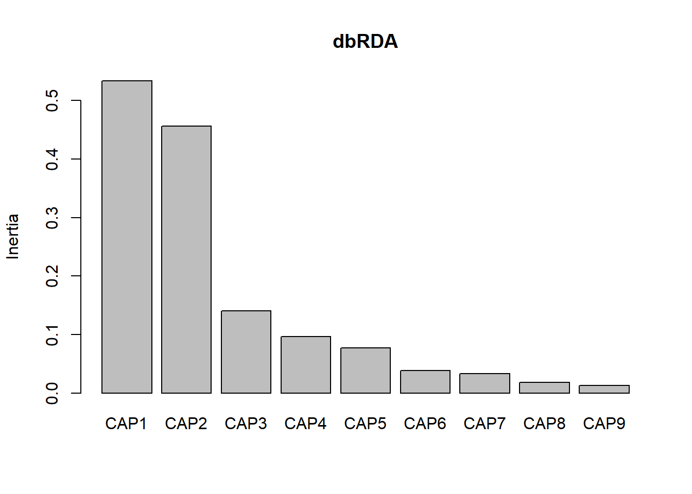 Once again the first two axes explain the most variation (CAP1-0.5336, CAP2-0.4557)
CAP: Canonical Analysis of Principal Coordinates
Anderson and Willis (2003) explains the idea of CAP and why you should use it. It is also a very good paper for explaining the differences between unconstrained and constrained ordinations and outlining important rules for multivariate analysis.
http://onlinelibrary.wiley.com/doi/10.1890/0012-9658(2003)084%5B0511:CAOPCA%5D2.0.CO;2/full
CAP and db-RDA are very similar. I can’t tell yet what the differences are between them. But CAP used to be available in vegan, hence why you run a db-RDA with “capscale”, but then it was modified so much it essentially became a db-RDA.
Why use CAP?
- it allows for any dissimilarity measure
- takes into account any correlation structure among the response variables (i.e. this is why its called ‘canonical’)
https://www.rdocumentation.org/packages/BiodiversityR/versions/2.8-4/topics/CAPdiscrim
# CAP example: if it works on your data
#library(BiodiversityR)
#cap <- CAPdiscrim(mont.spec.matrix.27 ~ Net_primary_productivity+ Relief + Exposure + Mangrove_connectivity + Denseseagrass_connectivity + Coral+ Depth + Protected_status_text , data=shannon.montast.env.site, dist="bray", axes=2, m=0, mmax=10, add=FALSE, permutations=0)I couldn’t get this to work on my data, but wanted to have the code in case anyone else wanted to try it! It first became available in PRIMER but this is a tool you have to pay for.
Overall when you are evaluating multivariate data, Anderson and Willis (2003) suggest your analysis includes four steps:
- robust unconstrained ordination (NMDS)
- appropriate constrained ordination
- statistical test of a hypothesis
- characterize species responsible for the patterns
Discussion Questions
- How would you determine which species are responsible for the patterns when you have so many species on your plots that its hard to interpret?
- If you have used other constrained ordinations, how did you choose which one to use?
- Have you used any packages to plot constrained ordinations?